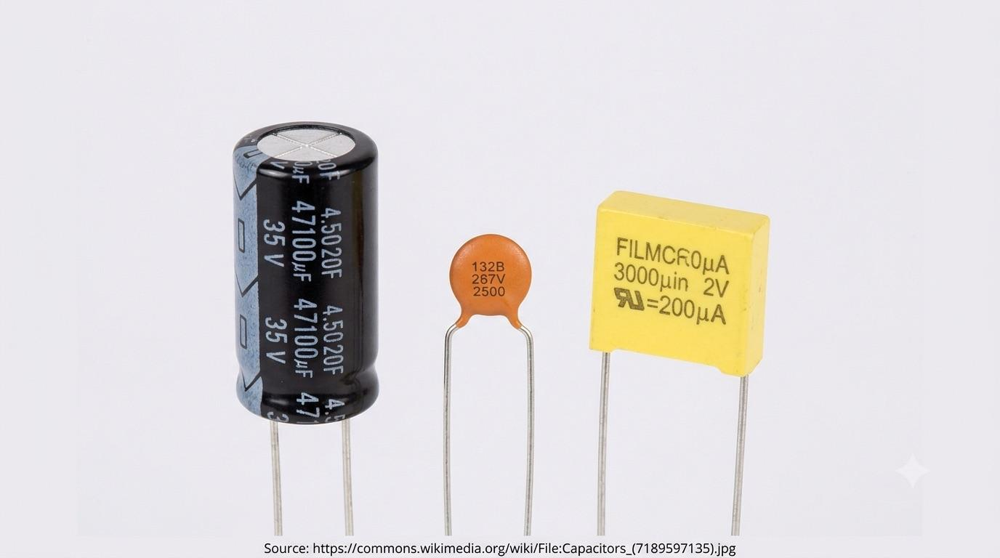

Chapter 03 · Passive Components
Capacitors
A capacitor is two conductive plates facing each other across a thin insulating gap. It can't pass steady current through that gap — but it can store charge on the plates, and that storage takes time. That one fact makes it a timer, a filter, and a smoother, all at once.
Charging is never instant
Charge a capacitor through a resistor and the voltage across it doesn't jump — it climbs on a curve. Discharge it and the curve falls the same way, in reverse.

A real, in-focus close-up photograph (not an illustration) of an assortment of capacitors on a plain background: a cylindrical electrolytic can, a small yellow or blue ceramic disc capacitor, and a film capacitor, so the different physical forms are visible. Prefer a free-licensed photo from Wikimedia Commons; when dropped in, replace the "Source:" line below with the real Commons file page URL, in small font. Target size ~1280×720px, 16:9 landscape, subject centred with safe margins — letterboxed into a 16:9 box.
Generate or source this image, then drop the file here.
Worked example
A 10 kΩ resistor charges a 100 µF capacitor from a 9 V supply. τ = RC = 10,000 × 0.0001 = 1 second. After 1 s the capacitor is at ≈5.7 V (63.2% of 9 V); after 5 s it's essentially fully charged.
Why this matters: Once fully charged, a capacitor blocks DC completely — no current flows through the insulating gap. But it happily passes AC, because AC keeps changing before the capacitor ever settles. That frequency-dependent blocking is what turns a capacitor into a filter, and it's exactly what tunes a radio (Chapter 08) when paired with an inductor.